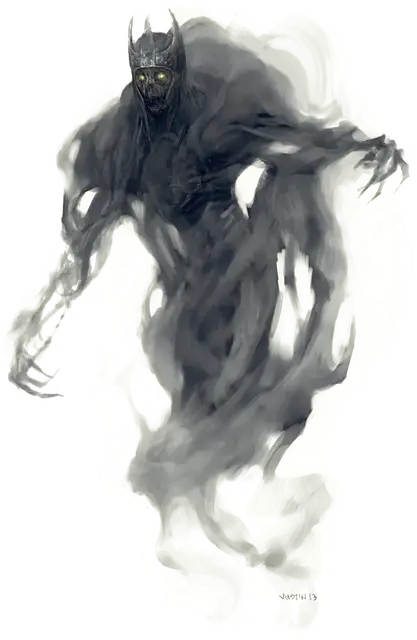

Призрак
Wraith
Средняя Нежить, нейтрально-злая

Класс Доспеха 13
Хиты 67 (9к8 + 27)
Скорость 0 футов, летая 60 футов (парит)
| мод | спас | ||
|---|---|---|---|
| СИЛ | 6 | −2 | −2 |
| ЛОВ | 16 | +3 | +3 |
| ТЕЛ | 16 | +3 | +3 |
| мод | спас | ||
|---|---|---|---|
| ИНТ | 12 | +1 | +1 |
| МДР | 14 | +2 | +2 |
| ХАР | 15 | +2 | +2 |
Сопротивление урону звук, кислота, огонь, холод, электричество; дробящий, колющий, рубящий от немагических атак, кроме нанесённых посеребрённым оружием
Иммунитет к урону некротическая энергия, яд
Иммунитет к состояниям сбивание с ног, паралич, очарование, отравление, опутанность, окаменение, истощение, захват
Чувства тёмное зрение 60 футов, пассивное Восприятие 12
Языки языки которые знал при жизни
Опасность 5 (1800 опыта)
Бонус мастерства +3
Среда обитания Подземье
Особенности
Бестелесное перемещение. Призрак может перемещаться сквозь других существ и предметы, как если бы они были труднопроходимой местностью. Он получает урон силовым полем 5 (1к10), если оканчивает ход внутри предмета.
Чувствительность к солнечному свету. Находясь на солнечном свету, призрак совершает с помехой броски атаки, а также проверки Мудрости (Восприятие), полагающиеся на зрение.
Действия
Вытягивание жизни. Рукопашная атака оружием: +6 к попаданию, досягаемость 5 футов, одно существо. Попадание: Урон некротической энергией 21 (4к8 + 3). Цель должна преуспеть в спасброске Телосложения Сл 14, иначе максимум её хитов уменьшится на количество, равное полученному урону. Это уменьшение длится до тех пор, пока цель не окончит продолжительный отдых. Цель умирает, если этот эффект уменьшает максимум её хитов до 0.
Создание спектра. Призрак нацеливается на гуманоида в пределах 10 футов, который умер насильственной смертью не более 1 минуты назад. Дух цели восстает спектром [specter] в пространстве трупа или ближайшем свободном пространстве. Спектр находится под контролем призрака. У призрака может быть не более семи спектров под контролем одновременно.
Описание
Призрак — это воплощение злобы, сконцентрированное в бестелесной форме, которое стремится истребить все живое. Это существо наполнено отрицательной энергией, и одно лишь его присутствие иссушает окружающие растения. Животные бегут от него. Даже небольшие огни тухнут, поглощенные забвением ужасного существования призрака.
Мерзкое забвение. Если смертный гуманоид живет порочной жизнью или заключает договор с исчадиями, он предает свою душу на вечное проклятье в Нижние Планы. Однако иногда душа настолько наполняется отрицательной энергией, что распадается и перестает существовать за миг до перехода в ужасное посмертие. Когда это происходит, дух становится бездушным призраком — злобной пустотой, запертой на плане, на котором он умер. Почти ничего прежнего от прошлой жизни призрака не сохраняется; в этой новой форме он существует только для уничтожения другой жизни.
Отсутствие тела. Призрак может перемещаться сквозь существ и твердые объекты так же легко, как смертное существо движется сквозь туман.
Призрак может сохранить отдельные воспоминания о своей смертной жизни в виде туманных отголосков. Но даже самые важные события в жизни и самые сильные эмоции будут теперь лишь тусклым отпечатком в памяти, ускользающим как полузабытый сон. Призрак может на мгновение застыть, увидев что-то, что восхищало его при жизни, или умерить свою ярость, признав прошлую дружбу. Однако такие моменты бывают редко, потому что большинство призраков презирает былую жизнь, так как это прошлое напоминает им о том, чем они стали теперь.
Командиры нежити. Призраки могут создавать слуг-мертвецов из духов гуманоидных существ, которые недавно умерли насильственной смертью. Такой дух становится спектром, ненавидящим все живое.
Призраки иногда управляют легионами мертвецов, замышляя уничтожение живых существ. Когда они появляются из своих гробниц, чтобы вступить в битву, жизнь и надежда содрогаются перед ними. Даже если армия призрака вынуждена отступить, земли, которые были заняты его силами, настолько опустошены и истощены, что живущие в них зачастую могут просто умереть от голода.
Натура нежити. Призраку не нужен воздух, еда, питье и сон.